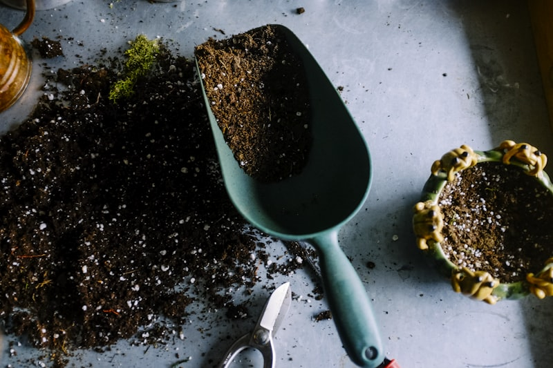
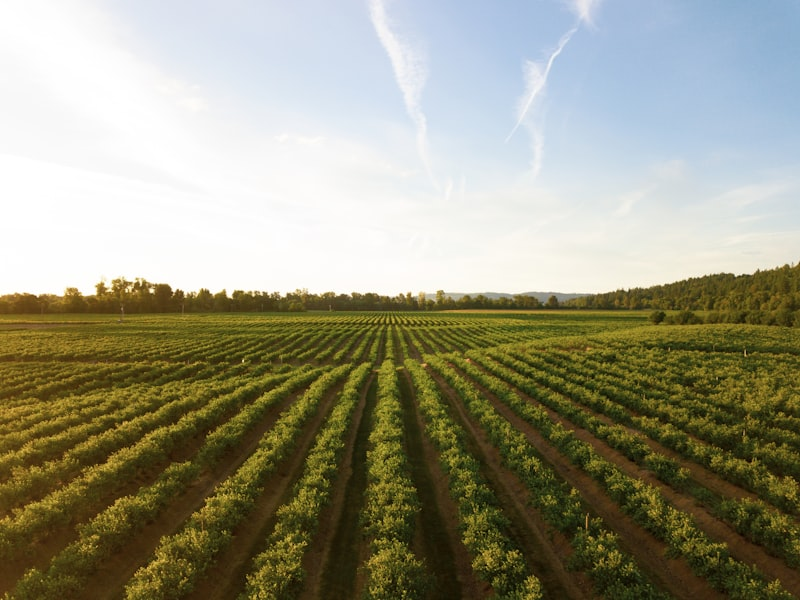

By SCWS Team
February 1, 2026 · 12 min read
Last summer, a Fallbrook homeowner watched in frustration as her neighbor's lush orchard flourished while her citrus trees struggled—despite using the same amount of water. The difference? Her neighbor had switched to well irrigation years ago, saving thousands while enjoying unlimited water access. Meanwhile, she was rationing every drop of expensive municipal water.
Using well water for irrigation offers Southern California property owners a cost-effective, reliable way to keep landscapes thriving without the crushing cost of municipal water. Whether you're watering a vegetable garden, maintaining fruit trees, or irrigating acres of landscaping, understanding how to properly use your well for irrigation makes the difference between a flourishing landscape and frustrating system failures.
Key Takeaway: Well water irrigation can save $600-$2,000+ annually compared to municipal water while providing chlorine-free water that's often better for plants. Success requires matching your irrigation system to your well's capacity and addressing water quality issues with proper filtration.
Understanding Well Capacity for Irrigation (GPM Requirements)
Before connecting any irrigation system to your well, you need to know your well's production capacity in gallons per minute (GPM). This determines what type of irrigation system will work and how many zones you can run simultaneously.
Typical Well Flow Rates
Residential wells in Southern California typically produce between 3 and 25 GPM. Here's how different flow rates affect your irrigation options:
| Well GPM | Best Irrigation Method | Approximate Coverage |
|---|---|---|
| 1-3 GPM | Drip irrigation only | Up to 1/2 acre with proper zoning |
| 3-8 GPM | Drip or micro-sprinklers | 1/2 to 1 acre |
| 8-15 GPM | Mixed drip/sprinkler systems | 1-2 acres |
| 15-25 GPM | Full sprinkler systems | 2-5 acres |
| 25+ GPM | Multiple simultaneous zones | 5+ acres |
Don't know your well's flow rate? A well pump professional can perform a flow test. Learn more about sizing your well pump for your needs.
Calculating Your Irrigation Water Needs
Different irrigation methods have vastly different GPM requirements:
- Drip emitters: 0.5-2 GPH each (0.01-0.03 GPM)
- Micro-sprinklers: 10-30 GPH each (0.17-0.5 GPM)
- Pop-up sprinkler heads: 2-5 GPM each
- Rotor heads: 3-8 GPM each
- Impact sprinklers: 4-10 GPM each
Example: A garden bed with 50 drip emitters at 1 GPH needs only 0.83 GPM—easily supplied by any well. But a lawn zone with 6 pop-up heads at 3 GPM each needs 18 GPM, requiring a higher-capacity well or storage tank system.

Drip vs. Sprinkler Systems: Which Works Better with Well Water?
When you irrigate with well water, the choice between drip and sprinkler systems becomes more critical than with municipal water. Each has distinct advantages and challenges.
Drip Irrigation: The Ideal Choice for Most Wells
Drip irrigation is often the best match for well water irrigation systems, especially for lower-capacity wells:
- Low GPM requirement: Operate entire systems on 2-5 GPM
- High efficiency: 90-95% of water reaches plant roots
- Low pressure operation: Works at 15-30 PSI (many wells provide this naturally)
- Reduced evaporation: Water goes directly to soil, not into air
- Weed reduction: Only waters target plants, not surrounding soil
Challenges with drip: Small emitter orifices clog easily with sediment, iron, or mineral deposits. Quality filtration is essential when using garden well water in drip systems.
Sprinkler Systems: When You Need Coverage
Traditional sprinklers work well with well water if your well produces adequate flow:
- Good for lawns: Provide even coverage for turf areas
- Higher GPM needs: Typically require 10-25 GPM per zone
- Pressure sensitive: Most need 30-50 PSI for proper operation
- Less clog-prone: Larger orifices tolerate more debris
- Lower efficiency: 50-70% efficiency due to evaporation and wind drift
Best Practice: Hybrid Systems
Many properties benefit from combining both methods:
- Drip zones: Gardens, trees, shrubs, container plants
- Sprinkler zones: Lawn areas requiring uniform coverage
- Separate scheduling: Run efficient drip zones during well recovery periods
Filtration Requirements: Protecting Your Irrigation System
Well water contains natural elements that can damage or clog irrigation equipment. Proper filtration is the key to a long-lasting well water irrigation system.
💡 Filter First, Fix Less
Installing proper filtration upfront costs $100-300 but can save thousands in clogged emitters, failed valves, and replanting costs. Think of filters as cheap insurance for your irrigation investment.
Sediment Filtration
Even clear-looking well water often carries fine sand, silt, or clay particles:
- Minimum requirement: 100-155 mesh filter for drip systems
- Sprinkler systems: 80-100 mesh usually sufficient
- Filter types: Screen, disc, or sand media filters
- Maintenance: Clean filters weekly during peak irrigation season
Pro Tip: Install a Y-strainer before your main filter as a pre-filter. This catches larger debris and reduces cleaning frequency for your fine mesh filter.
Iron Filtration
Iron is common in Southern California well water and causes serious irrigation problems:
- Staining: Leaves rust-colored deposits on foliage, hardscapes, and structures
- Clogging: Iron bacteria create slimy buildup in pipes and emitters
- Threshold: Above 0.3 ppm causes visible staining
Solutions for high-iron well water:
- Oxidizing filters: Remove iron before irrigation system
- Drip tape: Use disposable drip tape you can replace annually
- Larger emitters: 2 GPH emitters clog less than 0.5 GPH
- Chlorination: Periodic shock treatment kills iron bacteria
Read our detailed guide on iron in well water for more solutions.
Hard Water Considerations
High mineral content (calcium and magnesium) creates scale buildup:
- Scale deposits: Reduce flow in emitters over time
- Acid treatment: Periodic vinegar or citric acid flush clears deposits
- Pressure-compensating emitters: Maintain flow despite partial clogging
Learn more about managing hard water from your well.
Pressure Considerations for Well Pump Irrigation
Well water pressure directly affects irrigation system performance. Understanding and managing pressure is essential for a well pump for irrigation applications.
Typical Well System Pressure
Most residential well systems operate between 30-60 PSI:
- Pressure tank settings: Usually 30/50 or 40/60 PSI cut-in/cut-out
- At the irrigation valve: Typically 5-15 PSI less due to friction loss
- Available pressure varies: Depends on distance from well and elevation
Pressure Requirements by System Type
| Irrigation Type | Optimal PSI | Minimum PSI |
|---|---|---|
| Drip irrigation | 20-30 PSI | 10 PSI |
| Micro-sprinklers | 25-35 PSI | 15 PSI |
| Pop-up sprinklers | 30-45 PSI | 25 PSI |
| Rotor heads | 40-55 PSI | 30 PSI |
Managing Pressure Issues
Low pressure solutions:
- Pressure-compensating emitters: Deliver consistent flow at varying pressures
- Booster pump: Add a small pump for irrigation-only pressure boost
- Reduce zone size: Smaller zones require less simultaneous flow
- Larger supply lines: Reduce friction loss with bigger pipe diameter
High pressure solutions:
- Pressure regulators: Install at each zone or main line
- Drip line rating: Ensure drip tubing is rated for your pressure
- Emitter type: Pressure-compensating emitters prevent overwatering
Experiencing pressure problems? Read our guide on low water pressure from wells.

Scheduling Irrigation Around Well Recovery
One of the biggest differences between municipal water and well water irrigation is managing your well's recovery rate. Unlike city water with essentially unlimited flow, your well needs time to replenish.
Understanding Well Recovery
Every well has two important metrics:
- Peak flow rate: Maximum GPM when the well is full
- Sustained yield: What the aquifer can supply continuously
- Recovery rate: How fast water level rebounds after pumping
Example: A well might deliver 15 GPM for short periods but only sustain 5 GPM continuously. Running sprinklers at 15 GPM for an hour would draw down the well, potentially causing the pump to run dry.
Smart Scheduling Strategies
- Cycle and soak: Run zones for 15-20 minutes, rest 30-60 minutes, repeat
- Off-peak irrigation: Water during early morning when household demand is lowest
- Zone staggering: Never run overlapping zones simultaneously
- Drip during day, sprinklers at night: Low-demand drip during household hours
- Seasonal adjustment: Reduce frequency (not duration) during cooler months
Storage Tank Systems
For wells with limited sustained yield, a storage tank provides the best solution:
- Concept: Well fills tank slowly; irrigation draws from tank quickly
- Sizing: 500-2,500 gallon tanks for residential irrigation
- Booster pump: Provides consistent pressure for irrigation
- Benefit: Well pump runs gently at sustainable rates
- Cost: $2,000-$5,000 for tank and booster system
Learn more about water storage tank systems for well properties.
🏆 Best Practice: The Buffer Tank Strategy
Install a 500-1,500 gallon tank between your well and irrigation system. Your well fills it slowly at a sustainable rate; your irrigation draws from the tank at whatever rate it needs. This protects your pump and ensures consistent pressure.
Water Quality Impact on Plants
Well water quality affects plant health differently than municipal water. Understanding your water chemistry helps you choose appropriate plants and treatments.
Benefits of Well Water for Plants
- No chlorine: Doesn't kill beneficial soil microorganisms
- No chloramine: Safer for sensitive plants and seedlings
- Consistent chemistry: Doesn't vary seasonally like some municipal supplies
- Natural minerals: Often contains beneficial calcium and magnesium
Potential Concerns
- High pH: Alkaline water (above 7.5) affects nutrient availability—treat with acidifiers
- Sodium: High sodium damages soil structure—leach periodically with low-sodium water
- Boron: Toxic to sensitive plants above 1 ppm—common in some desert wells
- Iron staining: Cosmetic issue on foliage but rarely harmful to plants
Recommendation: Test your well water annually through a certified lab. Basic irrigation suitability tests cost $50-$150 and identify any issues that could affect plant health. See our well water testing guide.

Cost Savings: Well Water vs. Municipal Water for Irrigation
The financial case for using well water irrigation is compelling, especially in water-expensive Southern California.
💰 The Real Math
At $8/1,000 gallons for municipal water, a 20,000 gallon monthly irrigation budget costs $160/month or $1,920/year. The same water from your well costs roughly $20/month in electricity. That's $1,700+ annual savings—enough to pay for treatment systems, filters, and still come out ahead.
Municipal Water Costs
Outdoor irrigation typically falls into the highest rate tiers:
- San Diego area: $7-$12 per 1,000 gallons (Tier 3-4 rates)
- Riverside area: $5-$9 per 1,000 gallons
- Typical irrigation use: 10,000-30,000 gallons/month for 1/4-1 acre
- Monthly cost: $50-$300+ just for outdoor water
Well Water Irrigation Costs
Your primary cost is electricity to run the pump:
- Typical pump: 1-3 HP motor
- Electricity cost: $0.20-$0.35 per kWh (SDG&E/SCE)
- Cost per 1,000 gallons: $0.50-$1.50 depending on pump efficiency and depth
- Monthly cost: $10-$50 for equivalent irrigation
Annual Savings Example
1/2 acre property using 20,000 gallons/month for irrigation:
Municipal water: 20 × $8 = $160/month = $1,920/year
Well water: 20 × $1 = $20/month = $240/year
Annual savings: $1,680
Learn more about the differences between well water and city water.
Irrigation System Design Basics
A well-designed irrigation system maximizes your well's capacity while delivering water efficiently to plants.
Essential Components
- Backflow preventer: Required by code—prevents contamination of well
- Master shutoff valve: Quick system isolation for maintenance
- Pressure regulator: Protects drip systems from excessive pressure
- Filter station: Sediment and/or iron filtration
- Zone valves: Electric valves controlled by timer
- Controller: Programmable timer with multiple zones
Zoning Strategy
Divide your landscape into zones based on:
- Water needs: Group plants with similar requirements
- Sun exposure: Sunny areas need more water than shade
- Soil type: Sandy soil needs shorter, more frequent watering
- GPM capacity: Size each zone within your well's sustainable flow
- System type: Separate drip and sprinkler zones
Pipe Sizing
Proper pipe sizing maintains pressure throughout your system:
- Main line: 1" minimum for whole-property distribution
- Zone laterals: 3/4" for sprinklers, 1/2" for drip zones
- Drip tubing: 1/2" or 5/8" distribution tubing
- Velocity rule: Keep water velocity under 5 ft/second to minimize pressure loss
Frequently Asked Questions
How many GPM do I need to irrigate with well water?
For residential gardens and landscapes, you typically need 3-10 GPM for drip irrigation and 10-20 GPM for sprinkler systems. A single sprinkler zone usually requires 3-5 GPM per head, so running 4-6 heads simultaneously needs 15-25 GPM. Drip systems are more efficient, allowing you to irrigate larger areas with lower flow rates.
Can I use well water directly for irrigation without filtration?
While possible, it's not recommended. Most well water contains sediment, iron, or minerals that can clog drip emitters and sprinkler heads. At minimum, install a 100-200 mesh filter for drip systems. If your water has high iron content (above 0.3 ppm), add an iron filter or use larger-orifice emitters designed for dirty water.
Is well water better for plants than city water?
Often yes. Well water typically lacks chlorine and chloramine found in municipal water, which can harm beneficial soil microbes. However, well water may contain minerals like iron, calcium, or sodium that affect certain plants. Test your well water and match plants to your water chemistry for best results. Most vegetables and ornamentals thrive with well water irrigation.
How do I schedule irrigation around my well's recovery rate?
If your well produces 5 GPM but you need 15 GPM for sprinklers, use a storage tank or cycle irrigation zones. Run one zone for 15-20 minutes, let the well recover for 30-60 minutes, then run the next zone. Alternatively, install a 500-1000 gallon holding tank that fills slowly and supplies irrigation on demand. This protects your pump and ensures consistent water delivery.
How much can I save by irrigating with well water instead of municipal water?
Significant savings are possible. Municipal water for irrigation typically costs $4-8 per 1,000 gallons in Southern California. Well water costs approximately $0.50-1.50 per 1,000 gallons (electricity only). A household using 15,000 gallons monthly for irrigation could save $50-100 per month, or $600-1,200 annually. Larger landscapes see proportionally greater savings.
Need Help Setting Up Well Water Irrigation?
Whether you need a new well pump for irrigation, want to optimize your existing system, or need help with filtration and pressure issues, our team has the expertise to help. We've helped hundreds of Southern California property owners maximize their well's irrigation potential. Visit our well pump services page to learn more about our capabilities.